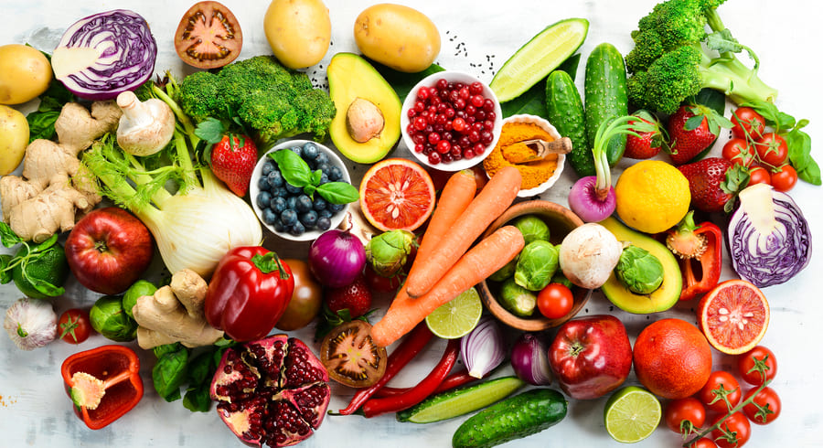
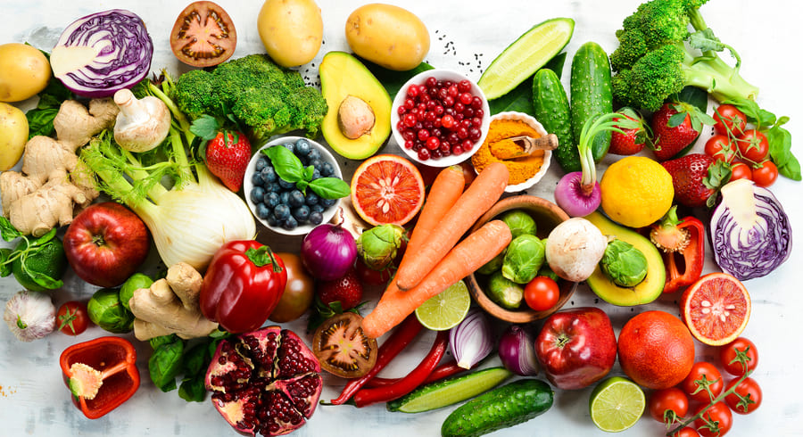

что мы знаем о здоровом питании человека?
Питание человека должно быть сбалансированным, то есть должен иметь
достаточного количества жиров, углеводов, белков, витаминов и т.д.
Также нужно знать в каком количестве их нужно употреблять чтобы
похудеть или набрать вес. У вас должен быть личный врач, который
ежемесячно/ежегодно проверяет ваше здоровье, состояние органов,
сахар в крови, калории и т.д.

Питание человека должно быть сбалансированным, то есть должен иметь
достаточного количества жиров, углеводов, белков, витаминов и т.д.
Также нужно знать в каком количестве их нужно употреблять чтобы
похудеть или набрать вес. У вас должен быть личный врач, который
ежемесячно/ежегодно проверяет ваше здоровье, состояние органов,
сахар в крови, калории и т.д.

что включает в правильное питание?
Правильное питание включает в себя сбалансированное количество
подборов продуктов и полезных витамнов.
Фрукты и овощи тоже для нас важны и полезны. Фрукты во время приема
пищи нельзя употреблять, нужно после его приема. Особенно кислотные
фрукты, например киви нужно кушать после еды, потому что из-за её
кислотности она быстрее переваривает еду в желудке. Также и с другими
кислотными фрукты. И лучше всего есть фрукты нужно в первом половине дня.
Также не нужно забывать что фастфуд вредно для здоровья.
 Выше перечисленные продукты это фастфуды. Фастфуд имеет слишком много
Выше перечисленные продукты это фастфуды. Фастфуд имеет слишком много
соли и сахара, и еще она слишком жирная то есть имеет также и много жира.
А из-за жира многие люди толстеют, употребляя много фастфуда. А некоторые
говорят, что от очень большего количества фастфуда можно получить рак!!!
А тогда зачем мы покупаем фастфуд если он вредный для нас?
Во-первых, фастфуд для нас кажется очень вкусным и его запах и вкус нас
приманивает и нам хочется от этого кушать. Фастфуд имеет вкусовые усилители,
потому что в нем есть много соусов как майонез и кетчуп.
А во-вторых, людям лень и трудно самим что-то приготовить. И поэтому люди
покупают фастфуд. Ещё некоторые люди спешат куда-то или сильно голодны, и
чтобы быстро перекусить они выбирают фастфуд.
Правильное питание включает в себя сбалансированное количество
подборов продуктов и полезных витамнов.
Фрукты и овощи тоже для нас важны и полезны. Фрукты во время приема
пищи нельзя употреблять, нужно после его приема. Особенно кислотные
фрукты, например киви нужно кушать после еды, потому что из-за её
кислотности она быстрее переваривает еду в желудке. Также и с другими
кислотными фрукты. И лучше всего есть фрукты нужно в первом половине дня.
Также не нужно забывать что фастфуд вредно для здоровья.
- Гамбургер
- Хот-Дог
- Шаурма/Донер
- Жаренные блюда
Выше перечисленные продукты это фастфуды. Фастфуд имеет слишком много соли и сахара, и еще она слишком жирная то есть имеет также и много жира.
А из-за жира многие люди толстеют, употребляя много фастфуда. А некоторые
говорят, что от очень большего количества фастфуда можно получить рак!!!
А тогда зачем мы покупаем фастфуд если он вредный для нас?
Во-первых, фастфуд для нас кажется очень вкусным и его запах и вкус нас
приманивает и нам хочется от этого кушать. Фастфуд имеет вкусовые усилители,
потому что в нем есть много соусов как майонез и кетчуп.
А во-вторых, людям лень и трудно самим что-то приготовить. И поэтому люди
покупают фастфуд. Ещё некоторые люди спешат куда-то или сильно голодны, и
чтобы быстро перекусить они выбирают фастфуд.